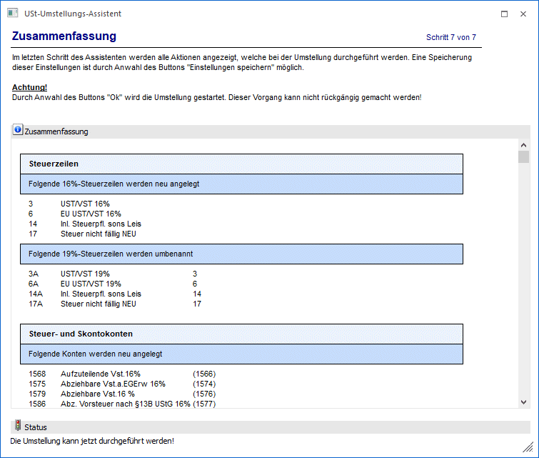
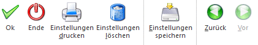
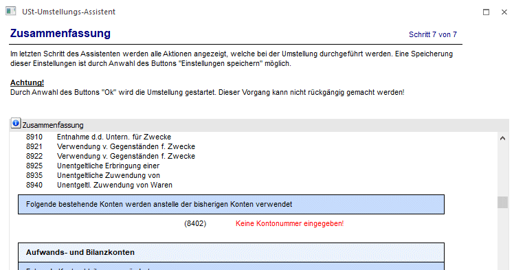
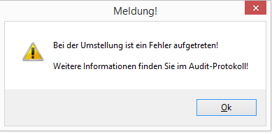

Im letzten Schritt des Assistenten werden alle Aktionen angezeigt, welche bei der Umstellung durchgeführt werden.
Diese Einstellung können gespeichert und auch ausgedruckt werden.
Achtung
Durch Anwahl des Buttons "Ok" wird die Umstellung gestartet. Dieser Vorgang kann nicht rückgängig gemacht werden!
Buttons

Ø Ok
Über den Button Ok" wird die Umstellung durchgeführt.
Ø Ende
Durch Drücken des Buttons "Ende" bzw. der Taste ESC wird das Fenster geschlossen.
Ø Einstellungen drucken
Die Einstellungen können auf den Drucker ausgegeben werden.
Ø Einstellungen löschen
Über den Button "Einstellungen löschen" werden gespeicherte Einstellungen gelöscht.
Ø Einstellungen speichern
Eine Speicherung der Einstellungen ist durch Anwahl dieses Buttons möglich. Beim nächsten Aufruf des Assistenten werden diese Einstellungen dann automatisch wiederhergestellt.
Ø Zurück
Durch Anwahl des Buttons "Zurück" kann in den vorherigen Schritt des Assistenten gewechselt werden.
Wurden Fehler erkannt, die eine Umstellung verhindern, werden diese in rot auf der Zusammenfassung ausgewiesen und die Umstellung kann nicht durchgeführt werden. Dann muss in den vorangegangenen Schritten die Korrektur der Fehler erfolgen, damit die Umstellung durchgeführt werden kann.

Sollte eine Umstellung nicht erfolgreich durchgeführt worden sein, kommt ein Hinweis auf das Audit. Mit Bestätigung der Meldung wird das Auditprotokoll geöffnet.
